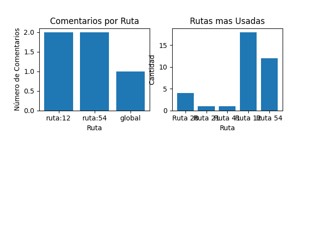

{% extends "index.html" %}
{% block encabezado %}
{% include "encabezado.html" %}
{% endblock %}
{% block menu %}
{% include "menu.html" %}
{% endblock %}
{% block contenido %}
{% load static %}
<script src="{% static 'js/mapa.js' %}"></script>

<div class="w-50 mt-3" style="margin: 0 auto;">
    <form>
        {% csrf_token %}
        <div>
            
        </div>
    </form>
<div>

<script>
    document.addEventListener("DOMContentLoaded", function () {
        hacerGrafica(); // Llama a la función después de cargar el archivo
        
    });
</script>
{% endblock %}
{% block pie_pagina %}
{% include "pie_pagina.html" %}
{% endblock %}
